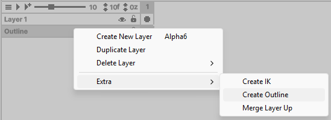
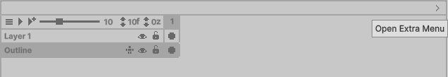
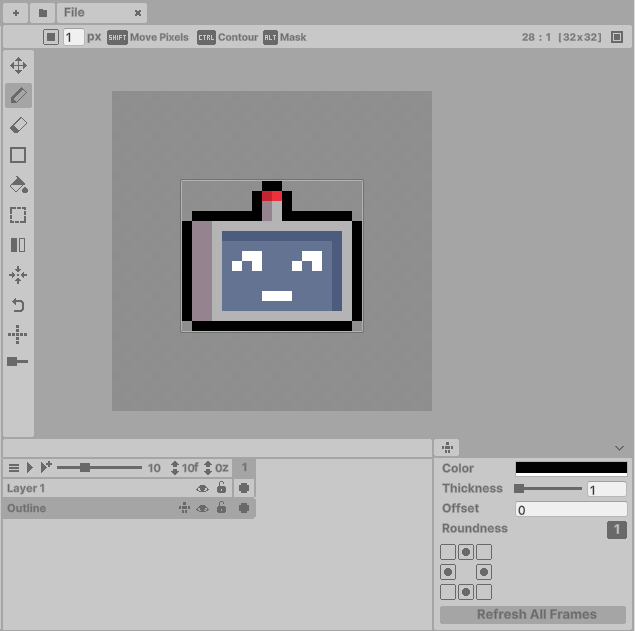

Generates borders for all layers in the current frame. Each layer can disable outlines via the Extra Menu. Warning: Like IK Layers, all pixels on this layer will be reset when updated.
How to enable:
- Right-click the desired layer
- Select Extra > Create Outline
- Enable auto-generation in Preferences if needed

- To remove, follow the same steps.
Modifying Outlines

Access outline controls through the Extra Menu (located on the far right of the Timeline window):

Adjust these settings or click Refresh All Frames to update:
| Setting | Description |
|---|---|
| Color | Outline color |
| Thickness | Outline width in pixels |
| Offset | Positions outline inside pixels |
| Roundness | Controls corner sharpness |
- Select which sides (N/S/E/W) get outlines
Tips
- Outline layers are still controlled by the hierarchy order - rearrange to control layer overlap.